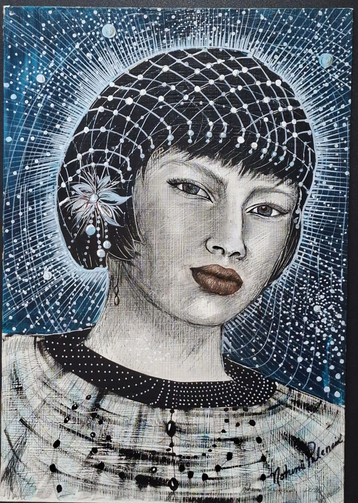

Archivo de obra 05 / 13
Shitikari
- Artista
- Nohemi Palencia Cisneros
- Técnica y soporte
- Técnica mixta sobre MDF
- Dimensiones
- 81 × 64 cm
- Año
Ficha técnica del portafolio de la artista. Fotografía original proporcionada por Nohemi Palencia.
← Volver a la galería